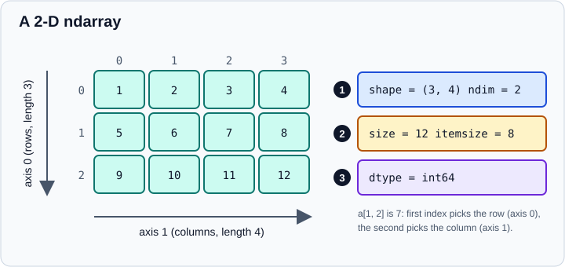

The Absolute Basics of NumPy
|
This content was generated with the assistance of AI and should be verified against the official documentation before being relied on in production. |
This page is the quick, practical introduction to NumPy that the rest of the sub-section builds on. It walks through the ndarray and the operations that you will use in almost every program, and it points to the dedicated pages for each topic. It targets NumPy 2.5 and was checked in October 2026. Examples target Python 3.13 or 3.14 and were run on Python 3.13. Every example was run with NumPy 2.5.4, and the printed output is the real output. If you have not installed NumPy yet, start with NumPy Installation and Versions.
All examples assume the standard import:
import numpy as npWhat an ndarray is
An ndarray is a fixed-size, N-dimensional grid of elements that all have the same data type. That uniformity is what
makes NumPy fast: elements are stored contiguously in memory as raw machine numbers (not as Python objects), and loops
over them run in compiled code. A Python list of floats stores a pointer to a separate boxed object per element; an
array of floats stores the eight bytes of each number directly.
The vocabulary used throughout the documentation:
-
Axis: one dimension of the array. A 2-D array has axis 0 (down the rows) and axis 1 (across the columns).
-
Shape: a tuple with the length of each axis, for example
(3, 4). -
Rank or
ndim: the number of axes. -
Size: the total number of elements, the product of the shape.
-
dtype: the data type shared by all elements, for example
int64orfloat64.

The figure shows a 3 by 4 array. Marker 1 is the shape and the number of axes, marker 2 is the element count and bytes per element, and marker 3 is the common dtype.
Array attributes
import numpy as np
a = np.array([[1, 2, 3, 4], [5, 6, 7, 8], [9, 10, 11, 12]])
print(a.ndim, a.shape, a.size, a.dtype, a.itemsize, a.nbytes)
print(type(a), type(a[0, 0]), repr(a[0, 0]))Output:
2 (3, 4) 12 int64 8 96
<class 'numpy.ndarray'> <class 'numpy.int64'> np.int64(1)itemsize is the number of bytes per element and nbytes is size * itemsize. Indexing a single element returns a
NumPy scalar (numpy.int64), not a Python int; since NumPy 2.0 its repr shows the type, np.int64(1), while
print still shows 1. The integer width depends on the platform default, which is 64-bit on every 64-bit system
including Windows since NumPy 2.0.
Creating arrays
The most direct way is np.array on a (nested) sequence. NumPy infers the dtype and the shape.
import numpy as np
print(np.zeros((2, 3)))
print(np.ones(3, dtype=np.int16))
print(np.full((2, 2), 7.5))
print(np.arange(0, 10, 3), np.linspace(0, 1, 5))Output:
[[0. 0. 0.]
[0. 0. 0.]]
[1 1 1]
[[7.5 7.5]
[7.5 7.5]]
[0 3 6 9] [0. 0.25 0.5 0.75 1. ]Source: NumPy: how to create a basic array.
np.empty allocates without initialising, so its contents are whatever happened to be in memory; use it only when you
overwrite every element. The functions zeros, ones, full and empty take a shape (a tuple, or a bare integer for 1-D)
and an optional dtype. They are covered in detail, with eye, diag, vander, block and the _like variants, in
Array Creation, and arange, linspace and the grid functions in
Ranges and Grids.
Indexing and slicing
Indexing works like Python lists, with one index per axis separated by commas. Slices start:stop:step select ranges
and, for basic slices, return a view of the same memory rather than a copy.
import numpy as np
a = np.array([[1, 2, 3, 4], [5, 6, 7, 8], [9, 10, 11, 12]])
print(a[1, 2]) # one element
print(a[0]) # first row
print(a[:, 1]) # second column
print(a[1:, ::2]) # rows 1 onwards, every second columnOutput:
7
[1 2 3 4]
[ 2 6 10]
[[ 5 7]
[ 9 11]]Source: NumPy: indexing and slicing.
Boolean masks select elements by condition, and np.nonzero returns the coordinates of the true entries:
import numpy as np
a = np.array([[1, 2, 3, 4], [5, 6, 7, 8], [9, 10, 11, 12]])
print(a[a < 5])
print(np.nonzero(a < 5))Output:
[1 2 3 4]
(array([0, 0, 0, 0]), array([0, 1, 2, 3]))Source: NumPy: indexing and slicing.
A boolean mask always produces a one-dimensional copy. The rules for each kind of indexing are the subject of Basic Indexing and Slicing and Advanced and Boolean Indexing.
Reshaping and adding axes
reshape gives the same data a new shape. The total size must stay the same, and one dimension may be -1 to let NumPy
infer it. Whenever possible the result is a view.
import numpy as np
a = np.arange(1, 13).reshape(3, 4)
b = a.reshape(2, 6)
print(b.shape, np.shares_memory(a, b))
col = np.array([1, 2, 3])
print(col[np.newaxis, :].shape, col[:, np.newaxis].shape, np.expand_dims(col, axis=0).shape)Output:
(2, 6) True
(1, 3) (3, 1) (1, 3)Source: NumPy: can you reshape an array? and NumPy: adding a new axis.
np.newaxis (an alias of None) inserts a length-1 axis, the standard way to turn a vector into a row or column so that
broadcasting works. Assigning to arr.shape still works in NumPy 2.5 but is deprecated; always call reshape. See
Reshaping, Stacking and Splitting.
Sorting, joining and splitting
import numpy as np
print(np.sort(np.array([2, 1, 5, 3, 7, 4, 6, 8])))
print(np.concatenate((np.array([1, 2]), np.array([3, 4]))))
a = np.arange(1, 13).reshape(3, 4)
print(np.vstack((a[0], a[1])))
print(np.hstack((a[0], a[1])))
print(np.hsplit(np.arange(1, 13).reshape(2, 6), 3))Output:
[1 2 3 4 5 6 7 8]
[1 2 3 4]
[[1 2 3 4]
[5 6 7 8]]
[1 2 3 4 5 6 7 8]
[array([[1, 2],
[7, 8]]), array([[ 3, 4],
[ 9, 10]]), array([[ 5, 6],
[11, 12]])]Source: NumPy: adding, removing and sorting elements and NumPy: creating an array from existing data.
np.sort returns a sorted copy; arr.sort() sorts in place. NumPy 2.5 added descending=True to sort and
argsort. np.row_stack was removed in 2.5: use np.vstack. Details for all of these are in
Sorting, Searching and Counting.
Views and copies
Slices and view() share memory with the original; copy() does not. Writing through a view changes the original.
import numpy as np
a = np.arange(1, 13).reshape(3, 4)
v = a[0, :].view()
v[0] = 99
print(a[0, 0]) # 99, the original changed
c = a.copy()
c[0, 0] = 1
print(a[0, 0]) # still 99Output:
99
99This is the most common source of surprising bugs for newcomers: a slice you modify and forgot was a view silently edits
the data it came from. See Copies and Views for the full set of rules
(including np.shares_memory).
Arithmetic and broadcasting
Operations between arrays of the same shape are element-wise. Operations between an array and a scalar apply the scalar to every element; this is the simplest case of broadcasting.
import numpy as np
data = np.array([1.0, 2.0])
ones = np.ones(2)
print(data + ones, data - ones, data * data, data / data)
print(data * 1.6)Output:
[2. 3.] [0. 1.] [1. 4.] [1. 1.]
[1.6 3.2]Source: NumPy: basic array operations and Broadcasting.
* is element-wise multiplication, not matrix multiplication; the matrix product is the @ operator. The general
broadcasting rules for arrays of different shapes are explained in Broadcasting.
Aggregations and axes
Methods such as sum, min, max, mean, prod and std reduce an array. With no axis they reduce everything to
a scalar; with an axis they collapse that axis and keep the others.
import numpy as np
a = np.arange(1, 13).reshape(3, 4)
print(a.sum(), a.mean(), a.max())
print(a.sum(axis=0)) # collapse the rows: one value per column
print(a.sum(axis=1)) # collapse the columns: one value per row
print(a.min(axis=0), a.prod(axis=1))
print(a.std())Output:
78 6.5 12
[15 18 21 24]
[10 26 42]
[1 2 3 4] [ 24 1680 11880]
3.452052529534663Source: NumPy: more useful array operations.
The easiest way to remember axis: it is the axis that disappears from the shape. Summing a (3, 4) array over axis=0
gives shape (4,); over axis=1 gives shape (3,). Pass keepdims=True to keep the collapsed axis with length 1.
See Reductions and Axis Semantics.
Random numbers
Use a Generator created with default_rng. Pass a seed for reproducible results.
import numpy as np
rng = np.random.default_rng(0)
print(rng.random(3))
print(rng.integers(5, size=(2, 4)))Output:
[0.63696169 0.26978671 0.04097352]
[[0 0 0 4]
[3 4 2 3]]Source: NumPy: generating random numbers and Random sampling.
The global functions np.random.seed, np.random.rand and np.random.randn that older tutorials use still exist, but
the documentation calls them discouraged: they run on the frozen legacy RandomState generator. See
Random Numbers with Generator.
Unique values and counts
import numpy as np
u = np.array([11, 11, 12, 13, 14, 15, 16, 17, 12, 13, 11, 14, 18, 19, 20])
values, first_index, counts = np.unique(u, return_index=True, return_counts=True)
print(values)
print(first_index)
print(counts)Output:
[11 12 13 14 15 16 17 18 19 20]
[ 0 2 3 4 5 6 7 12 13 14]
[3 2 2 2 1 1 1 1 1 1]Source: NumPy: unique items and counts and numpy.unique.
Do not rely on the output order of np.unique for exotic dtypes: for some of them NumPy 2.3 and 2.4 changed the
algorithm and the result is not guaranteed to be sorted. Sort explicitly if you need ordered output.
Transposing, reversing and flattening
import numpy as np
a = np.arange(1, 13).reshape(3, 4)
print(a.T.shape)
print(np.flip(a[0]), np.flip(a, axis=0)[0])
f = a.flatten()
r = a.ravel()
f[0] = -1
print(a[0, 0]) # unchanged, flatten returned a copy
r[0] = 100
print(a[0, 0]) # changed, ravel returned a viewOutput:
(4, 3)
[4 3 2 1] [ 9 10 11 12]
1
100arr.T is a view with the axes reversed. flatten() always copies; ravel() returns a view when the memory layout
allows and a copy otherwise, so never rely on it either way when you plan to write.
Saving and loading arrays
import numpy as np
a = np.arange(6).reshape(2, 3)
np.save("a.npy", a) # one array, binary .npy format
np.savez("bundle.npz", a=a, b=a * 2) # several arrays in one archive
np.savetxt("a.csv", a, fmt="%d", delimiter=",", header="x,y,z")
print(np.load("a.npy"))
with np.load("bundle.npz") as archive:
print(archive["b"])
print(np.loadtxt("a.csv", delimiter=",", skiprows=1, dtype=int))Output:
[[0 1 2]
[3 4 5]]
[[ 0 2 4]
[ 6 8 10]]
[[0 1 2]
[3 4 5]]np.load refuses to unpickle object arrays unless you pass allow_pickle=True, which should only ever be used on
files you trust. For tabular files with headers, missing values or mixed types, read them with pandas or with
np.genfromtxt. See Reading and Writing Files.
Learning more and getting help
Inside Python, help(np.sum) prints the docstring, and IPython and Jupyter show it with np.sum? (and the source with
np.sum??). The numpy.org reference documents every function and its parameters. For pandas, which wraps NumPy
arrays with labels, see pandas; for the wider ecosystem see
The Python Scientific Stack.
Common beginner mistakes
-
Mutating through a view. Modifying a slice edits the original; call
.copy()if you need independence. -
Integer arrays truncating floats. Assigning
2.7into anint64array stores2; pick the dtype up front. -
Using Python’s
sum,maxorminon a 2-D array. They iterate over the first axis and are much slower; use the NumPy function or method with anaxis. -
Expecting
*to be a matrix product. Use@ornp.matmul. -
Comparing floats with
==. Usenp.iscloseornp.allclose. -
Ragged nested lists.
np.array([[1, 2], [3]])raises aValueErrorin modern NumPy because the sub-lists have different lengths; passdtype=objectonly if you really want an array of lists. -
Treating a bare
np.float32scalar like a Python float. Mixed arithmetic follows NEP 50 promotion; see Type Promotion (NEP 50).